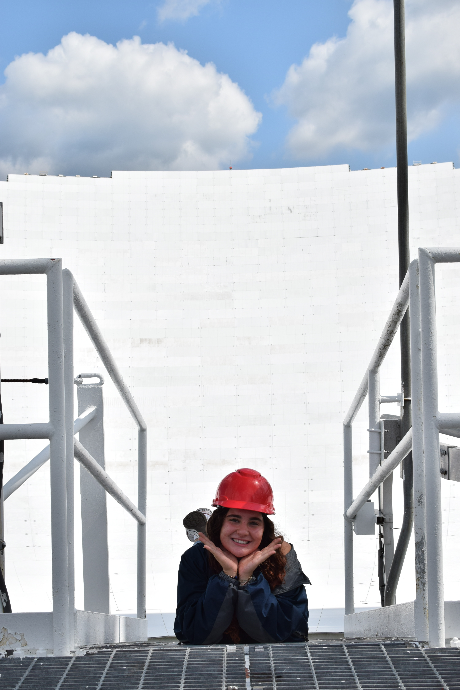
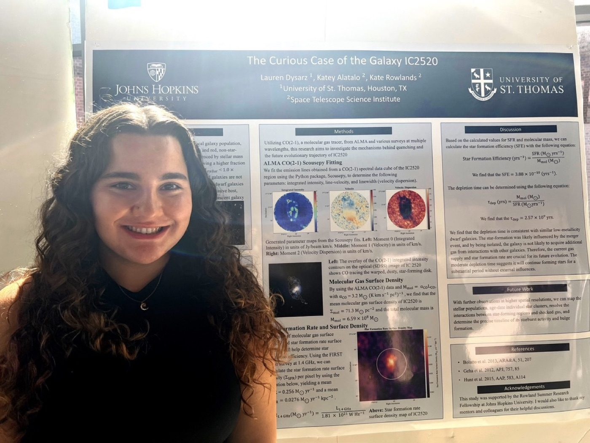
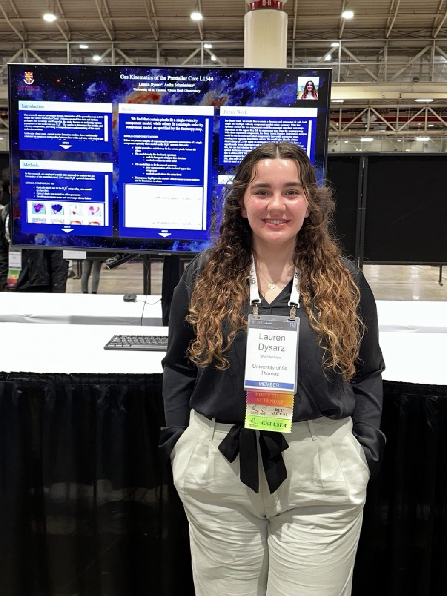
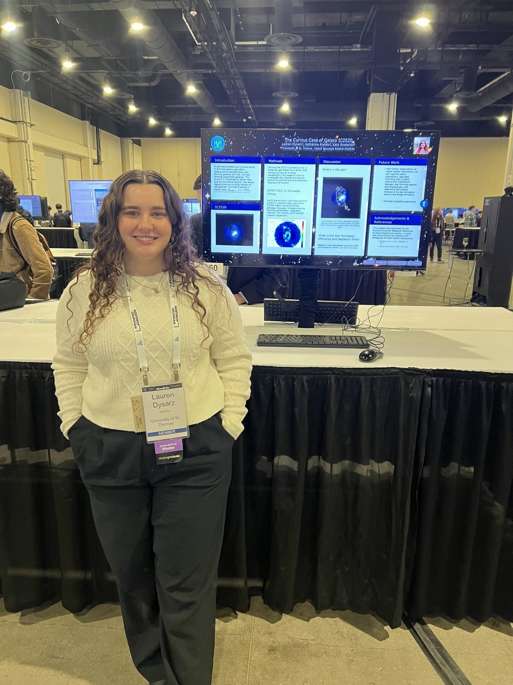
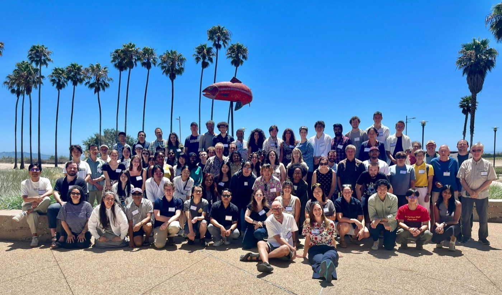

Intro

On the Green Bank Telescope at Green Bank Observatory.
I am an Astrophysics PhD student at UC Santa Barbara working with Dr. Caitlin Casey.
My research focuses on dusty star-forming galaxies, some of the most massive galaxies in the early universe. Imaging and spectroscopy across many wavelengths, from the optical and near-infrared with JWST to the (sub)millimeter, reveal their structures and star formation, offering clues to both their past and their possible futures.
Research
Dusty star-forming galaxies
My PhD research with Dr. Caitlin Casey at UC Santa Barbara focuses on dusty star-forming galaxies (DSFGs), some of the most intensely star-forming systems in the universe, whose starlight is largely hidden behind dust. Using JWST NIRCam and MIRI imaging and NIRSpec spectroscopy in the COSMOS field, I study DSFGs to characterize their structures, mass build-up, and star formation histories, piecing together their evolutionary story.
Previous work
At the Space Telescope Science Institute and Johns Hopkins University, I worked with Dr. Katherine Alatalo and Dr. Kate Rowlands on IC2520, a nearby low-mass galaxy, to understand how galaxies like it shut down their star formation (AAS 245 iPoster).

Presenting IC2520 at the JHU Summer STEM Research Symposium, 2024.
At Green Bank Observatory, I worked with Dr. Anika Schmiedeke on understanding the gas kinematics of the prestellar core L1544 to search for magnetohydrodynamic (MHD) waves (AAS 243 iPoster, NRAO report).


iPosters at AAS 243 in New Orleans (left) and AAS 245 in National Harbor (right).
Teaching & Outreach
Teaching
- Teaching Assistant, UC Santa Barbara (2025–2026): Physics Mechanics Lab and Optics Lab
- Undergraduate Teaching Assistant, University of St. Thomas (2022–2025): General and University Physics I & II, Statics, Circuits, Modern Physics, Fundamentals of Nanotechnology
Mentoring
- Physics Inspiring the Next Generation (PING), Green Bank Observatory (2023): led workshops and telescope observations for high school astronomy camp participants
- Minority Science & Engineering Improvement Program (MSEIP), University of St. Thomas (2022–2024): academic support and STEM workshops for low-income and minority students
Service & Outreach
- Local Organizing Committee, COSMOS 2026 collaboration meeting, UC Santa Barbara
- President, Society of Physics Students, University of St. Thomas (2022–2025): conferences, public astronomy nights, and eclipse viewing events
- Volunteer, High School STEM Events (2022–2025): hands-on physics and astronomy demonstrations for K–12 students

The COSMOS 2026 collaboration meeting at UC Santa Barbara.
CV
My full CV is available as a PDF.
Contact
Please feel free to contact me at ldysarz@ucsb.edu.